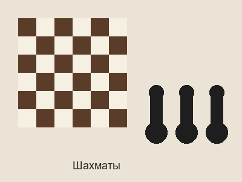
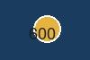

Классические игры, проверенные временем:

Рис. 1 — Шахматы: доска 6×6 и чёрные пешки (изображение объекта с пояснением).
Правила клуба для игры в шахматы:
Комплектация шахмат:

Рис. 2 — Игральные кубики (кубики d6) с точками-очками.
Современные настольные игры для компании:
Нажмите на миниатюру, чтобы открыть большое изображение (600×400) в новой вкладке:

Рис. 3 — Миниатюра (100 пикс. по горизонтали). Клик открывает images/big.jpg в новом окне.